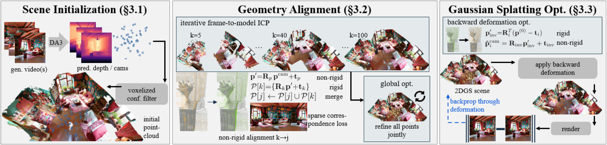

Video diffusion models generate high-quality and diverse worlds; however, individual frames often lack 3D consistency across the output sequence, which makes the reconstruction of 3D worlds difficult. To this end, we propose a new method that handles these inconsistencies by non-rigidly aligning the video frames into a globally-consistent coordinate frame that produces sharp and detailed pointcloud reconstructions. First, a geometric foundation model lifts each frame into a pixel-wise 3D pointcloud, which contains unaligned surfaces due to these inconsistencies. We then propose a tailored non-rigid iterative frame-to-model ICP to obtain an initial alignment across all frames, followed by a global optimization that further sharpens the pointcloud. Finally, we leverage this pointcloud as initialization for 3D reconstruction and propose a novel inverse deformation rendering loss to create high quality and explorable 3D environments from inconsistent views. We demonstrate that our 3D scenes achieve higher quality than baselines, effectively turning video models into 3D-consistent world generators.

We propose a three stage method that reconstructs a 2DGS scene from generated videos.
First, we estimate multi-view depth and cameras with a geometric foundation model. The resulting dense scene initialization is unaligned (multiple non-overlapping surfaces) due to the inconsistent input frames.
We propose a tailored non-rigid geometry alignment that leverages iterative frame-to-model ICP and sparse correspondences, followed by global optimization, to create thin surfaces with detailed textures.
Then, we leverage the alignment in a novel non-rigid aware 2DGS optimization to obtain high-quality, consistent 3D worlds.
We visualize the iterative frame-to-model ICP process. In orange is the next frame before alignment, in green the next frame after alignment. By repeating the iterative process across all input frames, we obtain a canonical pointcloud geometry with aligned surfaces in a single world space.
We compare our method against recent 3D reconstruction methods on the generated frames from multiple state-of-the-art video diffusion models. Concretely, we generate single video sequences depicting various indoor/outdoor scenes and camera motions from text with Wan-2.2 and with camera-control using ViewCrafter, Gen3C, Seva, and Voyager. We additionally adopt the recent autoregressive world generators Genie3 and HY-WorldPlay. We reconstruct 3D scenes from N=50 images sampled from these videos with various baselines.
Input video generated with ViewCrafter.
Input video generated with SEVA.
Input video generated with HY-WorldPlay.
Input video generated with Genie3.
Input video generated with Gen3C.
Input video generated with Voyager.
Input video generated with Wan-2.2.
A single generated video is limited in the amount of scene exploration it can show. Recent works exploit VDMs autoregressively to generate multiple sequences that depict entire 360 degree scenes. We compare against WorldExplorer and VGGT-X by generating and then reconstructing up to 32 video sequences with SEVA via the progressive scene expansion strategy of WorldExplorer.
Input video generated with WorldExplorer / SEVA.
Input video generated with WorldExplorer / SEVA.
Input video generated with WorldExplorer / SEVA.
Input video generated with WorldExplorer / SEVA.
We provide an interactive viewer of large-scale 3D worlds generated with our method. Here, we trained a 3DGS scene instead of 2DGS to better support online viewers. Note that the files are slightly compressed using the .sog format to reduce the file size.